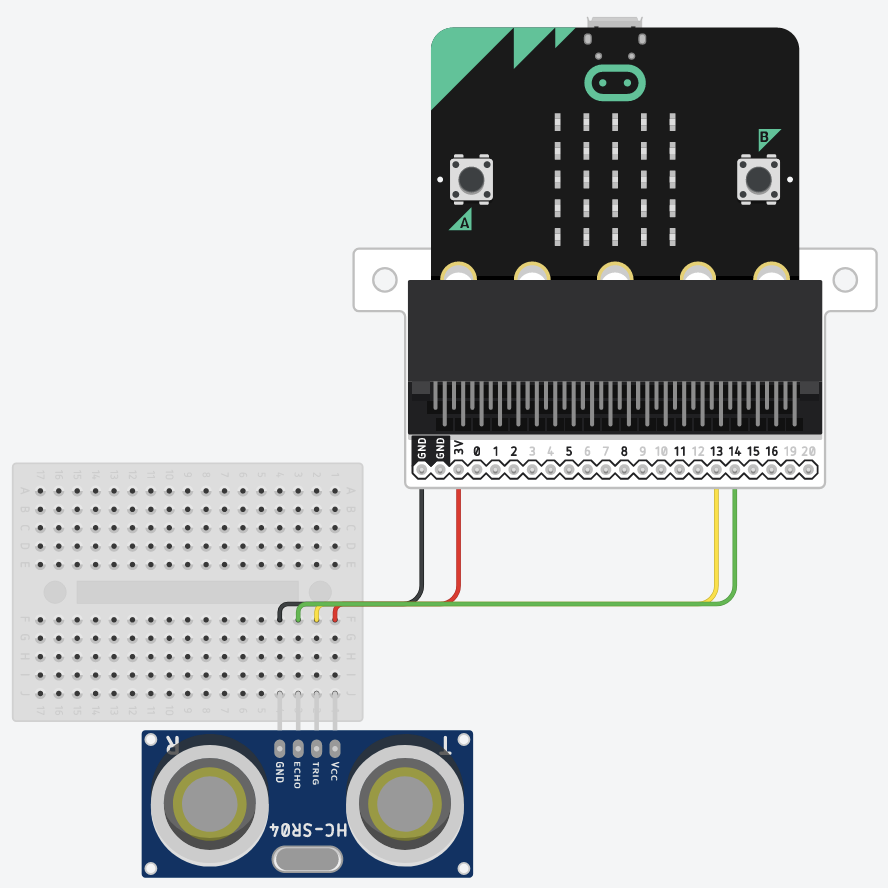
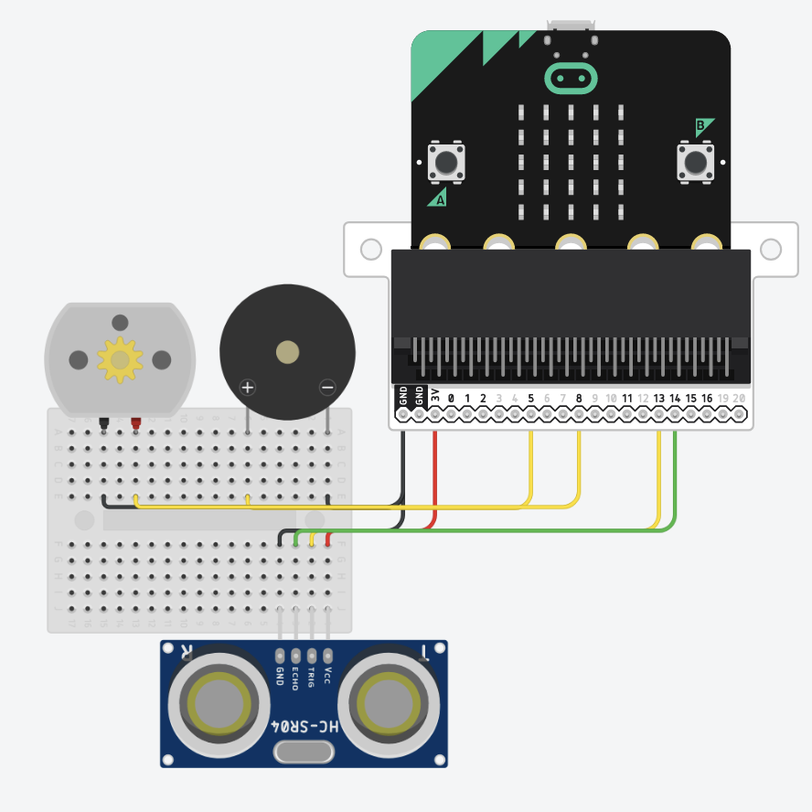

the design
Creating plans for the prototype.
My idea is to make a collision detection system that can be attached to the body. Let’s say the foot. It would be able to alert the user through stimulating a variety of different senses.
As the user would be visually impaired or blind, a visual stimuli, such as flashing lights, would be useless. There is also a high difficulty in stimulating the smell and taste senses of the user. Therefore, it leaves me with two sense: sound and vibration.
To design my artefact, I will be using Tinkercad’s circuit design tool.
First, we need a Micro:bit. It will act as the "brains" of the system. The breakout block it is attached to expands its capabilities, and allows it to control more pins (pins send electronic signals to components that they are connected to through wires).
Then, we add an ultrasonic distance sensor to the system. A mini breadboard is used for organization. From here on, black wires represent "ground" wires only and red wires represent "power" wires only.
Next, we add a piezoelectric buzzer to the system. It will buzz when it receives a signal. Note that the pins used in the design does not reflect the final build.
Finally, we add a DC motor to the system, which will spin when it receives a signal, produce a vibration effect.
The program design will be simple, and will be divided into three parts. To show the design, we will be using a Javascript syntax, but with text replacing methods and functions.
The first part manages the ultrasonic distance sensor.
We bind the ultrasonic distance sensor's "trigger" and "echo" pin to the breakout board's pin α and β. The variable will be set a value in centimeters representing how far away the sensor is from the nearest obstacle in front.
let distance = distance({trigger: α, echo: β}, {unit: "cm"});
The second part manages the motor and the buzzer.
We make a new variable, that sets the interval in microseconds between each buzz or vibration. The smaller the distance, the smaller the interval is. Let's assume at 10cm away the machine will buzz or vibrate every one-fifth of a second.
let distance = distance({trigger: α, echo: β}, {unit: "cm"}); let interval = distance * 20;
To prevent the interval being too big or too small, we need to set a limit. The machine will only activate when the sensor is 50cm or less away from an obstacle. The interval will be shortest when the sensor is 10cm away from an obstacle: it will not beep any faster even if the sensor is less than 10cm away from an obstacle.
let distance = distance({trigger: α, echo: β}, {unit: "cm"});
if (distance <= 50) {
let interval = distance * 20;
interval = distance <= 10 ? 200 : interval;
}
Lastly, we pass this into the buzzer and vibrator. (Note: repeatForever() and wait() are not actual JavaScript functions)
while (true) {
let distance = distance({trigger: α, echo: β}, {unit: "cm"});
if (distance <= 50) {
let interval = distance * 20;
interval = distance <= 10 ? 200 : interval;
}
wait(interval);
};
The last part manages the user interface.
The user can press button A to toggle the buzzer on and off, and button B for the vibrator.
while (true) {
let distance = distance({trigger: α, echo: β}, {unit: "cm"});
if (distance <= 50) {
let interval = distance * 20;
interval = distance <= 10 ? 200 : interval;
if (buzzerOn) {
buzzer.buzz(200);
}
if (vibratorOn) {
vibrator.vibate(200);
}
}
wait(interval);
};
var buttonA = microBit.buttonA;
var buttonB = microBit.buttonB;
var buzzerOn = true;
var vibratorOn = true;
buttonA.addEventListener("click", () => {
buzzerOn = buzzerOn === true ? false : true;
});
buttonB.addEventListener("click", () => {
vibratorOn = vibratorOn === true ? false : true;
});